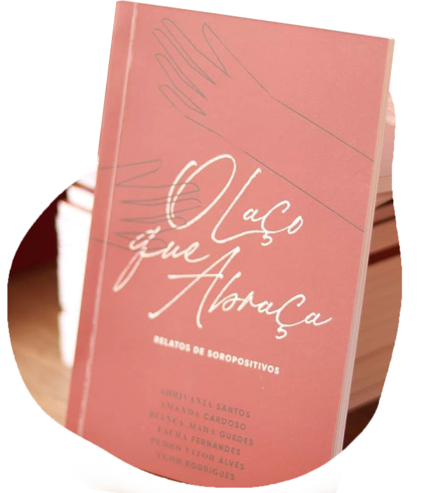

Ei, você! Puxa uma cadeira, vamos conversar!
Quantas pessoas soropositivas você conhece? O que você sabe sobre o HIV? O Laço que abraça é uma conversa sobre acolhimento. O livro acolhe pessoas soropositivas e abre espaço para que elas nos contem suas histórias, suas reações e relações, marcadas pela descoberta de ter o vírus em seus organismos. Ele também acolhe as suas leitoras e leitores para uma conversa franca, mesclando os relatos pessoais de Morgana, Jota, Glória e João a dados científicos, apresentados de forma simples e acessível. A proposta é que o conhecimento produza acolhimento. Você aceita esse convite? Espero que sim!

Onde começa essa história?
O Laço que Abraça é um livro de perfis que surgiu das histórias e nuances de quatros pessoas anônimas, comuns e soropositivas, produzido como projeto experimental do curso de Comunicação Social da Universidade Federal de Uberlândia. Foi publicado em 2019 com apoio do Programa Municipal de Incentivo à Cultura (PMIC) da Prefeitura Municipal de Uberlândia.
O livro é composto por quatro perfis anônimos e, ao final de cada um, a seção a Entenda, que se propõe a esclarecer e contextualizar, trazendo dados científicos e pesquisas relacionadas ao capítulo que você acabou de ler. Além disso, há indicações dos lugares mencionados nas histórias, tais como ambulatórios, ONG, casas de acolhimento, todos em Uberlândia.
Graças ao apoio do PMIC, o projeto ganhou novas
dimensões. Seu lançamento contou com um momento
cultural voltado à prosa e à distribuição gratuita
de exemplares. Além disso, com o objetivo de
alcançar e conscientizar um público ainda maior por
meio de contrapartida social, O
Laço que Abraça foi
disponibilizado em algumas bibliotecas públicas de
Uberlândia.
Essa expansão também alcançou o
ambiente digital, contando com um roteiro de estudos
enviado para as redes municipal e estadual de
ensino, além de um podcast no Spotify que resume
brevemente cada capítulo. Todo esse esforço teve o
propósito de expandir e democratizar, o
máximo possível, o conteúdo da obra.
Leia o Laço que Abraça
É possível ler os relatos de Morgana, Jota, Glória e João de duas formas: por meio de bibliotecas públicas e digitalmente, através de Ebook adquirido online.
● Biblioteca UFU Umuarama
Para empréstimo domiciliar é necessário é obrigatório ter vínculo active com a instituição.
● Biblioteca Municipal de Uberlândia
Para empréstimo domiciliar basta realizar o cadastro presencial.
● Amazon
Você pode ler O Laço que Abraça direto pelo seu Kindle ou aplicativo de leitura! O e-book está disponível na Amazon por R$ 5,99 e, se você assina o Kindle Unlimited, a leitura é gratuita.